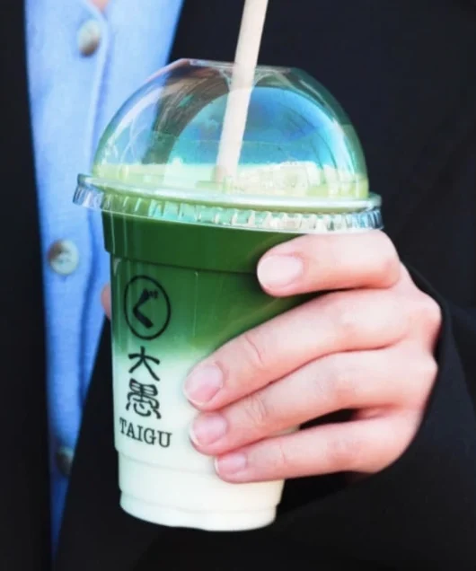
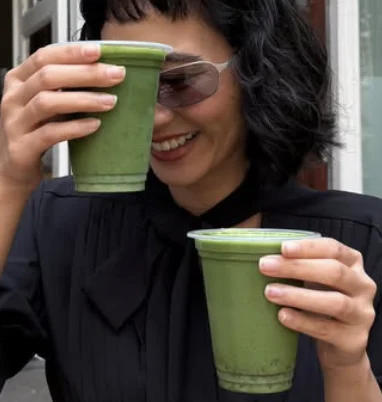

Taigu's matcha comes from Uji, just outside Kyoto: organic, and milled between granite stones. It's the slow way. A stone mill grinds only a few dozen grams an hour, so the leaf stays cool and the colour stays vivid.
02 茶筅chasen
Whisked to a foam.
Bamboo, a quick zig-zag, and a dense, glossy foam. Guests describe Taigu's matcha as deep, rich and highly concentrated. Real matcha, not the syrupy kind.
03 注ぐsosogu
Over cold milk.
Iced, with milk or oat milk. With strawberry purée at the bottom, or shiratama mochi on the side, if you like.
“It actually tasted like matcha.” Google review
04 お品書きthe menu
Build your cup.
抹茶ラテ
Iced matcha latte
Matcha · milk
05 甘味and to eat
抹茶テリーヌMatcha terrine
抹茶タルトMatcha tart
かき氷Matcha kakigori
天ぷらそばTempura sobaDe Pijp
寿司Sushi & donburiOost
06 声guests
“Real matcha, not the syrup kind.”
4.4 ★ De Pijp · 4.3 ★ Oost · 740+ Google reviews

“One of the best matcha places in Ams! Love their matcha because the concentration is very high, making it very deep in flavour.”
Google review · De Pijp
“I got the matcha and it actually tasted like matcha! (not those watered down ones)”
Google review · Oost

“If you truly know and appreciate a real matcha, not the syrup and sugary mixed ones, this one is for you.”
Google review · De Pijp
“Best matcha place in Amsterdam! … very authentic and truly lovely experience.”
Google review · Oost
“The atmosphere was very nice, with tatami-style seating that created a comfortable and authentic feel.”
Google review · De Pijp
07 二店two houses
Come by.
De Pijp
Ceintuurbaan 246
Tatami-style seating, matcha terrine, tart and kakigori, and tempura soba.